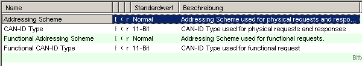

A CANdela ECU is exported into an ODX DIAG-LAYER-CONTAINER. Used interfaces (CAN_D, CAN_C ...) are exported into a PROTOCOL layer. The base variant is exported to BASE-VARIANT and CANdela variants are exported to ECU-VARIANTs.
[ODXE-R1040-ComParam]
Note: CANdelaStudio 3.0 SP4 does not export a COMPARAM-SPEC.
Since CANdelaStudio 4.0 one PROTOCOL layer is exported per used interface in the CANdela data model. The PROTOCOL layer references one of the standardized (or customer specific) COMPARAM-SPECs. The COMPARAM-SPEC may be optionally exported to a separate file. The exported standardized COMPARAM-SPEC is determined by the value of the CANdela EcuDoc attribute "Protocol Standard" and the qualifier of the corresponding interface:
| CANdela Protocol Standard | Qualifier of interface attribute | Resulting COMPARAM-SPEC |
|---|---|---|
| "UDS" | Not evaluated. | UDS_on_CAN_CPS.odx |
| "KWP" | "KLINE" | KWP2000_CPS.odx |
| "KWP" | Not "KLINE" | KWP_on_CAN_CPS.odx |
| UDS | Bustype == "DoIP" or "Ethernet" | ISO_13400 |
Table 6: Mapping of CANdelaProtocolStandard to COMPARAM-SPEC
The communication parameters defined in a CANdela interface are exported as COMPARAM-REFs at the BASE-VARIANT. Parameters that can not be mapped to a COMPARAM defined in the corresponding COMPARAM-SPEC are skipped with a warning. The optional snref from COMPARAM-REF to PROTOCOL is used to assign the the COMPARAM-REF to the corresponding interface in the CANdela data model.
In case an Interface contains a Enum-Comparam "InterfaceNotRelevantForOdx" with value "1"/("Yes")" the interface is skipped during ODX-Export and no PROTOCOL / COMPARAM-REFs are generated.
See [OPT-R360] in the options dialog.
If the export option "Export only necessary COMPARAM-REFs" is activated, the ODX-Export will only generate a COMPARAM-REF if the value specified in CANdela differs from the value from the COMPARAM-SPEC.
In case the Option "Export only necessary COMPARAM-REFs" is set, CANdela comparams are automatically mapped to the target ODX-COMPARAM-SPEC based on the qualifier. If the CANdela-Qualifier matches the COMPARAM.SHORT-NAME in ODX, a COMPARAM-REF is generated. With this mechanism it is possible to add additional COMPARAMs of the ODX-COMPARAM-SPEC to CANdela interfaces.
[ODXE-R900] For additionally mapped COMPARAMs it is possible to specify the UNIT of the CANdela-Comparam in order to automatically adjust the value to the Target COMPARAM-SPEC.
If the description of the CANdela comparam contains "[Unit: microseconds]", the CANdela parameter is in microseconds and will not be multiplied when mapping to ODX.
If the description of the CANdela comparam contains "[Unit: milliseconds]", the CANdela parameter is in milliseconds and will be multiplied by 1000 if the ODX COMPARAM references the UNIT "microseconds".
The generation of COMPARAM-REFs for the addressing schema is based on several CANdela parameters. Especially in ODX2.0.1 and ODX2.2.0 and the usage of the ISO-COMPARAM-SPECs the CANdela parameters influence several ODX-COMPARAM-REFs. The following figure shows the relevant CANdela parameters for the calculation of the Addressing schema.

Addressing Scheme communication parameters
The following table shows how these parameters influence the generation of ODX-COMPARAM-REFS.
| Addressing Schema | CAN-ID Type | CP_CanPhysReqFormat | CP_CanRespUSDTFormat | CP_CanRespUUDTFormat |
|---|---|---|---|---|
| 11-Bit | normal segmented 11-bit transmit with FC | normal segmented 11-bit receive with FC | normal unsegmented 11-bit receive | |
| Extended | 11-Bit | extended segmented 11-bit transmit with FC | extended segmented 11-bit receive with FC | extended unsegmented 11-bit receive |
| 29-Bit | normal segmented 29-bit transmit with FC | normal segmented 29-bit receive with FC | normal unsegmented 29-bit receive | |
| Extended | 29-Bit | extended segmented 29-bit transmit with FC | extended segmented 29-bit receive with FC | extended unsegmented 29-bit receive |
Table 7: Communication paramters for functional addressing
In case the functional addressing schema is defined explictly by the Parameters "Functional Addressing Schema" and "Functional CAN-ID Type", the following mappins is applied. In case these parameters are not explicitly defined, the parameters "Addressing schema" and "CAN-ID Type" are used as basis.
| Functional Addressing Schema | Functional CAN-ID Type | CP_CanFuncReqFormat |
|---|---|---|
| 11-Bit | normal segmented 11-bit transmit with FC | |
| Extended | 11-Bit | extended segmented 11-bit transmit with FC |
| 29-Bit | normal segmented 29-bit transmit with FC | |
| Extended | 29-Bit | extended segmented 29-bit transmit with FC |
Table 8: Communication parameters for functional addressing
Please not that the above mentioned names of communication parameters are not standardized. These names may vary dependant on the template of the manufacturer.
The file name of the exported COMPARAM-SPEC is exported by adding the ECU-Qualifier as prefix to the Name of the COMPARAM-SPEC listed in the table Mapping of CANdelaProtocolStandard to COMPARAM-SPEC.
The special communication parameters
have no direct representation in ODX. ODX Export represents them only implicitly by using a COMPARAM-SPEC which has
ISO_11898_2_DWCAN andISO_15765_3_on_ISO_15765_2.Unsupported service NRCs are exported as GLOBAL-NEG-RESPONSE within the BASE-VARIANT.